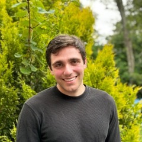

Curriculum Vitae
Resume

Jack Johnston
Mechanical Engineering & Materials Science student at Duke University · R&D, data analysis & hardware design
+1 (949) 514-1475
linkedin.com/in/jack-johnston-b060a22b8 · github.com/jojcdm
Education
Duke University
Durham, NC · Expected Graduation May 2027
B.S. Mechanical Engineering
Minor: Mathematics
GPA: 3.8 · Dean’s List (Fall 2023, Spring 2024)
Minor: Mathematics
GPA: 3.8 · Dean’s List (Fall 2023, Spring 2024)
IES Abroad Madrid — Engineering Study Abroad (Fall 2025)
Technical Skills
- SolidWorks & Fusion 360
- Python Parametric CAD (manifold3d, build123d)
- Arduino, Klipper & 3D Printing (FDM DFM)
- Data Analysis, Statistics & Machine Learning
- Minitab & Gage R&R
- Design Verification & Validation (DVT, IQ)
- Microsoft Suite & Git/GitHub
Languages
English — Fluent
French — Conversational (8 yrs)
French — Conversational (8 yrs)
Locations
Durham, North Carolina
Corona del Mar, California
Corona del Mar, California
Work Experience & Research
Johnson & Johnson MedTech — Quality + R&D Engineering Intern
2025 & 2026- Worked hands-on across two summers with R&D and manufacturing teams to build, test, and improve assembly and process workflows for next-generation cardiac catheters.
- Used structured, data-driven problem-solving to surface process inefficiencies and drive design and production improvements.
- Authored optimized procedures and documentation that standardized daily operations in a controlled ISO 8 cleanroom, reinforcing repeatability and a safety-first discipline.
- Performed Design Verification, Lot Release, and Installation Qualification testing on manufacturing devices.
University of California, Irvine — Physics Research
Summer 2024- Worked with PhD and undergraduate researchers under Prof. Cao to model material behavior under extreme conditions.
- Applied Python-based machine learning to large materials datasets, drawing insights from multi-principal-element systems.
Duke University — Undergraduate Researcher
2023 – 2024- Designed and interpreted laboratory experiments contributing empirical evidence for superfluorescence in perovskites.
Engineering Projects
AD5M 3+2-Axis Tilt Table (Rev. V6)
Oct – Nov 2026- Designed, printed in PETG, wired, and bench-tested a bolt-on two-axis trunnion print bed (+5° to −95° tilt, 360° spin, 0.011° resolution via 5:1 GT2 belts and 608 bearing stack-ups).
- Built code-based parametric CAD (Python + manifold3d) with automated collision sweeps and mesh verification (42–46 passing checks); migrated controls to SKR mini E3 V2 (TMC2209) under Klipper v0.11.0 and rooted the host AD5M with Forge-X.
Invented Testing Fixture — J&J Electrophysiology (INV2508037)
Summer 2025- Identified the need for, designed, and built a rotating testing fixture for Device Verification Testing (DVT) of experimental cardiac catheters.
- Submitted to the Johnson & Johnson Intellectual Property Team under invention disclosure INV2508037; created fingerprinting solutions for patenting and handed off at R&D request for follow-on intern development.
Bionic Arm
2024- Spent 500+ hours designing, iterating, and 3D-printing 60+ intricate, interchangeable pieces integrating into a functioning wrist-activated foam-dart launcher.
Leadership & Philanthropy
Access to Justice in the Courts — Orange County Superior Courts
2020 – 2023- Creator and Facilitator: researched common errors for self-represented Probate Court litigants; drafted, narrated, and recorded instructional videos approved by the Presiding Judge and published on the OC Superior Court website.